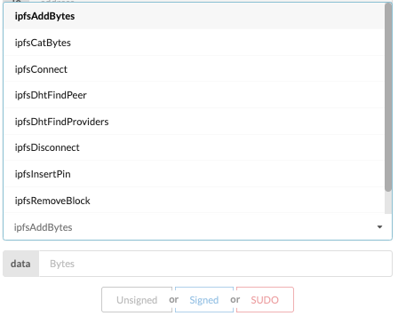
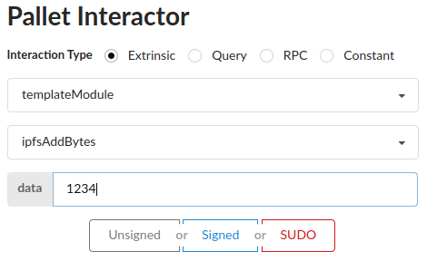

Introduction
Substrate is a blockchain and smart contract framework written in the Rust programming language. The InterPlanetary File System (or IPFS) is a distributed, peer-to-peer, content-addressed storage framework.
Substrate has many features that differentiate it from a typical blockchain framework. One such feature is Off-Chain Workers, which are separate wasm execution contexts that run alongside your blockchain node’s runtime, enabling you to make send and receive data from external sources, such as HTTP APIs.
Thinking about an Off-Chain Worker in the context of IPFS led us to develop this functionality,
called offchain::ipfs. This gives you a reduced, but still powerful, subset of IPFS commands
you can call right from your pallet, on block creation, to achieve things like:
- Bytes -> Content ID (CID) data storage
- CID -> Bytes data storage
- Peer and content discovery via the distributed hash table (DHT)
- Libp2p connection and swarming with other IPFS peers
- Pinning and unpinning CIDs
This material and Rust IPFS itself are presented by the rs-ipfs team: @koivunej, @ljedrz, @whalelephant, and @aphelionz
TODO: Video embed in book
A quick note about node-template
The primary value of this work is the embedded IPFS node itself and its Off-chain Worker APIs.
We reference the node-template pallet and executable throughout this manual. This included pallet
is meant to be a showcase of the embedded IPFS node, and is just one of many possible integrations
and uses cases that are possible. More IPFS functionalities could be exposed, and the ones exposed
could be improved and personalized further.
Finally, while we are moving towards documenting and releasing this work in a more official
capacity, offchain::ipfs should still be considered an alpha preview.
Getting Started
Our code base is currently a well-maintained fork of paritytech/substrate and will remain so until we are confident enough to make a PR proposing its inclusion to Substrate’s core.
In the meantime, and for simplicity’s sake, we are using a Docker image for delivery. Additionally, we will cover how to use the baseline substrate-front-end-template to quickly preview the functionality.
TODO: Anything else here?
Using the Docker image
Currently, the recommended way to use offchain::ipfs is via the Docker image provided by
Equilibrium.
Simply pull the [eqlabs/substrate-ipfs] image from Docker Hub:
$ docker pull eqlabs/substrate-ipfs
The image comes with two binaries:
node-template- which serves as a preview pallet and reference implementationsubstrate-ipfs- which is the real deal. Substrate infused with IPFS
Running node-template
By default, the container will execute a command for starting the node-template binary with a development chainspec. We expose the default websockets, rpc, p2p and prometheus ports from the container to the host machine for interactions.
$ docker run \
-p 9944:9944 \ # websockets
-p 9933:9933 \ # rpc
-p 30333:30333 \ # p2p
-p 9615:9615 \ # prometheus
-it \
--rm \
--name node-template \
substrate-ipfs
Running substrate-ipfs
$ docker run \
-p 9944:9944 \ # websockets
-p 9933:9933 \ # rpc
-p 30333:30333 \ # p2p
-p 9615:9615 \ # prometheus
-it \
--rm \
--name sub-ipfs \
substrate-ipfs \
substrate # Override default command
Container customizations
Several options are already available to tailor your container's runtime to suit your needs.
Persistent Storage
To run with persistent storage volume between containers, first create a volume:
$ docker volume create substrate-ipfs-vol
Then add -v substrate-ipfs-vol:/substrate-ipfs to the docker run commands above.
Running a custom command
To overwrite the default container commands, simply add the binary name followed by
flags, options, or subcommands to the end of the docker run command.
Complete customization example
Putting it all together, a complete command with a persistent volume and a custom executable command might look something like this:
For example, to display the help information from substrate
$ docker run \
-p 9944:9944 \
-p 9933:9933 \
-p 30333:30333 \
-p 9615:9615 \
-it \
--rm \
--name sub-ipfs \
-v substrate-ipfs-vol:/substrate-ipfs \ # mounted docker volume
substrate-ipfs \
substrate --help # override custom command
Previewing the functionality with a nice UI
If you’re looking for a quick demo of the functionality, the simplest thing to do is to launch the [substrate-frontend-template] UI.
First run the docker image via the instructions in the previous section, and then run the following steps:
$ git clone https://github.com/substrate-developer-hub/substrate-front-end-template
$ cd substrate-front-end-template
$ yarn install
$ yarn start
This will automatically launch a browser with a UI allowing you to interact with your node's capabilities.
Using offchain::ipfs via the UI
Once the browser page opens, scroll to the bottom to the Pallet Interactor section.
Make sure the "Extrinsic" radio button is active, and then select templateModule from the
"Pallets / RPC" dropdown.

Then, select the callable you want from the list of callables that become available:

Once a callable is selected, an additional text field or fields will appear below the Callables select box. Type the arguments in and then click Signed. Watch your node logs and also the extrinsic events to the right for output and information.

Read on for a detailed list of callables that offchain::ipfs exposes.
offchain::ipfs callables
The following callables are available to you. These were chosen due to popularity and to try and give substrate uses the most cohesive and familiar experience using IPFS within their node.
- api.tx.templateModule.ipfsAddBytes - add the given bytes to the IPFS repository; the off-chain worker interval for this activity is every block with an odd BlockNumber (i.e. every other block). For example adding 1234 gives you the CID QmU1f6ngsoHvwtViihzLQPXCA8j3sagmvY9GJJDY7Ao7Aa
- api.tx.templateModule.ipfsCatBytes - display the bytes (UTF-8 is displayed as a string, while non-UTF-8 bytes are displayed in their hexadecimal representation) with the given Cid; the off-chain worker interval for this activity is also every block with an odd BlockNumber. In the inverse of the last item, requesting the CID above will return 1234
- api.tx.templateModule.ipfsConnect - connect to the given Multiaddr; the off-chain worker interval for this activity is every block (the queue of connection requests is processed with every block in the chain). Try it with /ip4/104.131.131.82/tcp/4001/p2p/QmaCpDMGvV2BGHeYERUEnRQAwe3N8SzbUtfsmvsqQLuvuJ.
- api.tx.templateModule.ipfsDisconnect - disconnect from the given Multiaddr; the off-chain worker interval for this activity is also every block. You can try disconnecting from multiaddr from the previous item.
- api.tx.templateModule.ipfsDhtFindPeer - perform a search for the addresses associated with the provided PeerId; the off-chain worker interval for this activity is every block. If you use the peerID from two items prior, QmaCpDMGvV2BGHeYERUEnRQAwe3N8SzbUtfsmvsqQLuvuJ, it will return /ip4/104.131.131.82/tcp/4001.
- api.tx.templateModule.ipfsDhtFindProviders - search for PeerIds known to be providing the given Cid; the off-chain worker interval for this activity is every block. Try it with the hash of the IPFS CID Inspector, QmY7Yh4UquoXHLPFo2XbhXkhBvFoPwmQUSa92pxnxjQuPU. Make sure you’re connected to at least one peer though!
- api.tx.templateModule.ipfsInsertPin - pin a block with the specified Cid, making it persistent; a pinned block can’t be removed. Try pinning the 1234 CID above: QmU1f6ngsoHvwtViihzLQPXCA8j3sagmvY9GJJDY7Ao7Aa
- api.tx.templateModule.ipfsRemovePin - remove a pin from a block, i.e. unpin it, so that it is no longer persistent and can be removed too. Trey removing the pin from the previous item.
- api.tx.templateModule.ipfsRemoveBlock - remove a block from the node’s repository
Building an offchain::ipfs app
In this book we’ll cover the bare essentials on what you need to start building out your dApp with offchain::ipfs. We cover two Rust clients and one JavaScript client, but there are many other clients in other languages.
How it works
TODO
Using offchain::ipfs from your Rust code
With substrate-subxt
In your Cargo.toml file
[dependencies]
substrate-subxt = "0.13.0"
async-std = { version = "1.6.4", features = ["attributes"] }
codec = { package = "parity-scale-codec", version = "1.3.5", default-features = false, features = ["derive"] }
substrate-subxt = "0.13.0"
sp-keyring = { version = "2.0.0", default-features = false }
Then in your main.rs:
use codec::Encode; use sp_keyring::AccountKeyring; use substrate_subxt::{Call, ClientBuilder, EventsDecoder, NodeTemplateRuntime, PairSigner}; #[async_std::main] async fn main() -> Result<(), Box<dyn std::error::Error>> { // Signer for the extrinsic let signer = PairSigner::<NodeTemplateRuntime, _>::new(AccountKeyring::Alice.pair()); // API client, default to connect to 127.0.0.1:9944 let client = ClientBuilder::<NodeTemplateRuntime>::new().build().await?; // Example CID for the example bytes added vec![1, 2, 3, 4] let cid = String::from("QmRgctVSR8hvGRDLv7c5H7BCji7m1VXRfEE1vW78CFagD7") .into_bytes() .to_vec(); // Example multiaddr to connect IPFS with let multiaddr = String::from( "/ip4/104.131.131.82/tcp/4001/p2p/QmaCpDMGvV2BGHeYERUEnRQAwe3N8SzbUtfsmvsqQLuvuJ", ) .into_bytes() .to_vec(); // Example Peer Id let peer_id = String::from("QmaCpDMGvV2BGHeYERUEnRQAwe3N8SzbUtfsmvsqQLuvuJ") .into_bytes() .to_vec(); // Begin to submit extrinsics // ipfs_add_bytes let add_bytes = client .watch( AddBytesCall { data: vec![1, 2, 3, 4], }, &signer, ) .await?; println!("\nResult for ipfs_add_bytes: {:?}", add_bytes); Ok(()) } #[derive(Encode)] pub struct AddBytesCall { data: Vec<u8>, } impl Call<NodeTemplateRuntime> for AddBytesCall { const MODULE: &'static str = "TemplateModule"; const FUNCTION: &'static str = "ipfs_add_bytes"; fn events_decoder(_decoder: &mut EventsDecoder<NodeTemplateRuntime>) {} }
With substrate-api-client
In your Cargo.toml file:
[dependencies]
substrate-api-client = { git = "https://github.com/scs/substrate-api-client.git" }
sp-core = { version = "2.0.0", features = ["full_crypto"] }
sp-keyring = { version = "2.0.0", default-features = false }
Then in your main.rs:
use sp_core::crypto::Pair; use sp_keyring::AccountKeyring; use std::{convert::TryFrom, string::String}; use substrate_api_client::{ compose_call, compose_extrinsic_offline, extrinsic::xt_primitives::UncheckedExtrinsicV4, node_metadata::Metadata, Api, XtStatus, }; fn main() { // instantiate an Api that connects to the given address let url = "127.0.0.1:9944"; // if no signer is set in the whole program, we need to give to Api a specific type instead of an associated type // as during compilation the type needs to be defined. let signer = AccountKeyring::Bob.pair(); // sets up api client and retrieves the node metadata let api = Api::new(format!("ws://{}", url)).set_signer(signer.clone()); // gets the current nonce of Bob so we can increment it manually later let mut nonce = api.get_nonce().unwrap(); // data from the node required in extrinsic let meta = Metadata::try_from(api.get_metadata()).unwrap(); let genesis_hash = api.genesis_hash; let spec_version = api.runtime_version.spec_version; let transaction_version = api.runtime_version.transaction_version; // Example bytes to add let bytes_to_add: Vec<u8> = vec![1, 2, 3, 4]; // Example CID for the example bytes added vec![1, 2, 3, 4] let cid = String::from("QmRgctVSR8hvGRDLv7c5H7BCji7m1VXRfEE1vW78CFagD7") .into_bytes() .to_vec(); // Create input for all calls let calls = vec![ ("ipfs_add_bytes", bytes_to_add), ("ipfs_cat_bytes", cid.clone()), ]; // Create Extinsics and listen for all calls for call in calls { println!("\n Creating Extrinsic for {}", call.0); let _call = compose_call!(meta, "TemplateModule", call.0, call.1); let xt: UncheckedExtrinsicV4<_> = compose_extrinsic_offline!( signer, _call, nonce, Era::Immortal, genesis_hash, genesis_hash, spec_version, transaction_version ); let blockh = api .send_extrinsic(xt.hex_encode(), XtStatus::Finalized) .unwrap(); println!("Transaction got finalized in block {:?}", blockh); nonce += 1; } }
For full demo with all pallet functions, please visit here
In JavaScript
This should work in both node.js and the browser via a bundler like Webpack or Parcel.
With polkadot.js
$ yarn init
$ yarn add @polkadot/api
// Import
const { ApiPromise, WsProvider, Keyring } = require('@polkadot/api');
;(async () => {
const provider = new WsProvider('ws://localhost:9944');
const api = await ApiPromise.create({
provider,
types: {
ConnectionCommand: 'ConnectionCommand',
DataCommand: 'DataCommand',
DhtCommand: 'DhtCommand',
Address: 'AccountId',
LookupSource: 'AccountId'
}
});
await api.isReady;
const keyring = new Keyring({ type: 'sr25519' });
const alice = keyring.addFromUri('//Alice');
const module = api.tx.templateModule
const PEER_ID = 'QmaCpDMGvV2BGHeYERUEnRQAwe3N8SzbUtfsmvsqQLuvuJ'
const PEER_MULTIADDR = `/ip4/104.131.131.82/tcp/4001/p2p/${PEER_ID}`
const CID_1234 = 'QmU1f6ngsoHvwtViihzLQPXCA8j3sagmvY9GJJDY7Ao7Aa'
// Connect to a peer
// await module.ipfsConnect(PEER_MULTIADDR).signAndSend(alice, logEvents)
// Add data as bytes (string or raw) to IPFS
// await module.ipfsAddBytes('1234').signAndSend(alice, logEvents)
// Cat (retrieve) data from IPFS
// await module.ipfsCatBytes(CID_1234).signAndSend(alice, logEvents)
// Disconnect from a peer
// await module.ipfsDisconnect(PEER_MULTIADDR).signAndSend(alice, logEvents)
// Locate a peer via the distributed hash table
// await module.ipfsDhtFindPeer(PEER_ID).signAndSend(alice, logEvents)
// Locate a peer that has the content you're seeing via the DHT
// await module.ipfsDhtFindPeer(CID_1234).signAndSend(alice, logEvents)
})()
const logEvents = ({ status, events }) => {
if (status.isInBlock) {
console.log(`included in ${status.asInBlock}`);
}
if (status.isInBlock || status.isFinalized) {
events.forEach((record) => {
const { event, phase } = record;
const types = event.typeDef;
console.log(`\t${event.section}:${event.method}:: (phase=${phase.toString()})`);
console.log(`\t\t${event.meta.documentation.toString()}`);
event.data.forEach((data, index) => {
console.log(`\t\t\t${types[index].type}: ${data.toString()}`);
});
})
}
}
Debugging JSON-RPC in the browser
You will connect to the blockchain node via JSON-RPC over WebSockets., On page load it will connect to port 9944 via WebSockets.
One good way to monitor the streaming results in the browser is to use devtools:
Contributing / Development
There are several angles that people can take to contribute to this effort.
TODO: Enumerate them
Building from Source
Building the docker image from source
$ git clone https://github.com/rs-ipfs/substrate
$ cd substrate
$ docker build --file .maintain/Dockerfile --tag substrate-ipfs .
This is a multistage build with the target being an image with name substrate-ipfs:latest containing the substrate binary and the node-template binary.
Note that this will take forever
Running the node from source
$ git clone https://github.com/rs-ipfs/substrate
$ cd substrate
$ git checkout offchain_ipfs
$ cargo build --workspace
And get a coffee…
Note that this will take forever, but less time than building in alpine
Architectural Explanation
TODO: How does it work?
Explain this: https://github.com/rs-ipfs/substrate/commit/ee328957b3fe9d1b0c9219478af013550a900e59